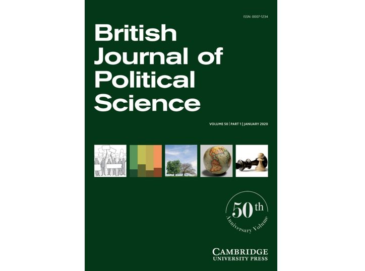
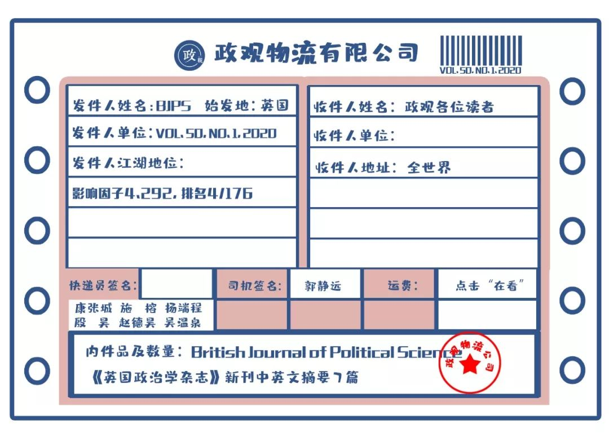

收录于合集
期刊简介： 《英国政治学杂志》（British Journal of Political Science，BJPS）是一本内容广泛的杂志，涵盖了政治科学的所有领域（包括政治理论、政治行为、公共政策和国际关系），并且相关学科（社会学、社会理学、经济学和哲学）学者的文章也经常出现。根据2018年Journal Citation Report显示，其2018年的影响因子为4.292， 在176种政治科学类期刊中排名第4（4/176）。
编者按： 政观对英文专业期刊摘要的翻译工作主要由团队中的在读硕士生和博士生自愿组织进行，受学生学识及翻译水平所限，译文可能有诸多不当之处，还望读者们见宥，也欢迎留言讨论。此外，由于版权所限，需要阅读原文的读者请通过所在学校/机构的图书馆数据库或其他途径访问下载。
期刊目录
1.性别，职位与党派提名
Gender, Incumbency and Party List Nominations
2.选举威权主义的策略起源
The Strategic Origins of Electoral Authoritarianism
4.非洲威权政体中的霸权型政党、选举和内阁不稳定
Dominant Party Rule, Elections, and Cabinet Instability in African Autocracies
5.人们如何评价对“肮脏”政权的外国援助？
How Do People Evaluate Foreign Aid To ‘Nasty’ Regimes?
6.互惠与公众对外国直接投资的反对
Reciprocity and Public Opposition to Foreign Direct Investment
7.发现高层腐败：使用客观的跨国公共采购数据测量腐败风险指标
Uncovering High-Level Corruption: Cross-National Objective Corruption Risk Indicators Using Public Procurement Data
8.富贵险中求？英国与丹麦的福利国家改革与政府支持度
Risky Business? Welfare State Reforms and Government Support in Britain and Denmark

性别，职位与党派提名
题目： Gender, Incumbency and Party List Nominations
作者： Stephen A. Meserve，北亚利桑那大学政治与国际关系学系助理教授；Dan Pemstein，北达科他州立大学政治学系副教授；William T Bernhard，伊利诺伊大学厄巴纳-香槟分校政治学系教授
摘要： 本文考察了政党候选人的提名策略如何影响议会中的女性描述性代表。聚焦于比例代表制选举，本文检验了政党是否将女性列入提名名单的决定因素。通过在个体层面评估政党（对候选人的）排名，本文直接检验了实证研究范式中关于女性代表的流行解释的关键——政党提名的机制。此外，本文还评估了职位和性别对提名的影响。本文使用欧洲议会选举数据来比较在单院制和多个机构的情况中，多个政党运作的情况。本文发现，尽管政党意识形态和女性工人的参与有助于解释哪些政党优先提名初入政坛的女性，然而在很大程度上，仍然是职位上的偏差解释了候选人提名中的性别差异。
This study assesses how political parties’ candidate selection strategies influence women’s descriptive parliamentary representation. Focusing on proportional elections, it explores what determines whether parties place women in viable list positions. Evaluating party rankings at the individual level, it directly examines a mechanism – party nomination – central to prevailing explanations of empirical patterns in women’s representation. Moreover, it jointly evaluates how incumbency and gender affect nomination. This study uses European Parliament elections to compare a plethora of parties, operating under numerous institutions, in the context of a single legislature. It finds that gender differences in candidate selection are largely explained by incumbency bias, although party ideology and female labor force participation help explain which parties prioritize the placement of novice women.
选举威权主义的策略起源
题目： The Strategic Origins of Electoral Authoritarianism
作者： Michael K. Miller, 华盛顿大学政治学系副教授
摘要： 独裁者为什么举行多党选举？本文认为，向选举威权主义的转变遵循一定的策略计算，即独裁者需在采取选举的国际激励与控制选举的成本、风险之间寻求平衡。利用1946~2010年非选举独裁政权的样本，本文用一个多项Logit模型验证了这一假设，该模型能够同时预测向民主和选举威权主义的转型。作者发现，倾向民主的国际杠杆——对民主国家贸易关系、军事同盟、政府间国际组织、国际援助的依赖——能够预测选举威权的施行。使选民更易控制的社会经济因素同样对选举威权有着预测作用，如低平均收入和高不平等程度。然而，由于民主化意味着独裁者权力的丧失，预测民主化的主要因素仍是政权脆弱性，而非国际和社会经济因素。研究结果表明，不同形式的自由化遵循不同的逻辑，这有助于我们理解独裁政体的动力以及民主进步带来的意外效果。
Why do autocrats hold multiparty elections? This article argues that transitions to electoral authoritarianism (EA) follow a strategic calculus in which autocrats balance international incentives to adopt elections against the costs and risks of controlling them. It tests this hypothesis with a multinomial logit model that simultaneously predicts transitions to EA and democracy, using a sample of non-electoral autocracies from 1946–2010. It finds that pro-democratic international leverage – captured by dependence on democracies through trade ties, military alliances, international governmental organizations and aid – predicts EA adoption. Socio-economic factors that make voters easier to control, such as low average income and high inequality, also predict EA transition. In contrast, since democratization entails a loss of power for autocrats, it is mainly predicted by regime weakness rather than international engagement or socio-economic factors. The results demonstrate that different forms of liberalization follow distinct logics, providing insight into autocratic regime dynamics and democracy promotion’s unintended effects.
非洲威权政体中的霸权型政党、选举和内阁不稳定
题目： Dominant Party Rule, Elections, and Cabinet Instability in African Autocracies
作者： Alex M. Kroeger，加州大学默塞德分校政治学系教授
摘要： 本文基于威权制度的文献解释了霸权型政党在限制领导人重组内阁能力上的作用。为了维持与党内精英进行权力分享的可信承诺，霸权型政党的领导人经常性改组内阁成员的能力受到了限制。这些限制也形成了关于内阁改组的明显时间模式，即大规模的改组通常发生在选举之后。反过来说，个人独裁型的领导人面临着更小的权力分享限制，能够以更随意的时间间隔进行更广泛的内阁改组。军事型领导人则面临着更为复杂的制约因素，包括军官或文官是否占据内阁的位置以及领导人在政权绩效和大众支持上在多大程度上依靠着文职部长。通过对1976至2010年间来自37个非洲国家的94位独裁领导人的内阁数据进行的实证分析，本文验证了关于霸权型政党领导人和个人独裁型领导人的理论假设，但对军事领导人内阁改组的行为则尚无定论。
This article draws on the authoritarian institutions literature to explain the role of dominant parties in constraining the ability of autocrats to reshuffle cabinet ministers. Dominant party leaders are constrained in their ability to frequently reshuffle ministers by the need to maintain credible power-sharing commitments with party elites. These constraints also produce distinct temporal patterns of instability where large reshuffles occur following elections. Conversely, personalist leaders face fewer power-sharing constraints and engage in more extensive cabinet reshuffles at more arbitrary intervals. Military leaders face complex constraints that depend on whether officers or civilians occupy cabinet posts and the extent to which leaders are dependent upon civilian ministers for regime performance and popular support. Empirical analyses using data on the cabinets of ninety-four authoritarian leaders from thirty-seven African countries between 1976 and 2010 support the theoretical expectations for dominant party and personalist leaders, but are inconclusive for military leaders.
人们如何评价对“肮脏”政权的外国援助？
题目： How Do People Evaluate Foreign Aid To ‘Nasty’ Regimes?
作者： Tobias Heinrich，南加州大学政治学系助理教授；Yoshiharu Kobayashi，利兹大学政治与国际研究学院讲师
摘要： 新近的外国援助理论假定选民对于外国援助的偏好为道德动机所驱使。然而，对于道德考量与对外援助所提供的被广泛接受的工具性目标之间如何互动这个议题，我们知之甚少。此外，这种相互作用对于政策偏好有何影响呢？本文通过调查实验对这些问题进行了测量，在实验中，受访者评估了针对“肮脏”受援国的外国援助政策(这些国家往往有违反人权、操纵选举、取缔新闻媒体等行为)。结果表明，公众对于提供给肮脏受援国的对外援助确有强烈反感，但也赞同这些援助带来的工具性利益。与既有文献的主流主张相反，本研究发现如果捐助国政府与“肮脏”受援国进行更多接触，公众的道德性反感可以大幅度扭转。这些发现对近来外国援助理论的微观基础提出了质疑，并对援助理论的文献提供了一些启示。
Recent theories of foreign aid assume that moral motives drive voters’ preferences about foreign aid. However, little is known about how moral concerns interact with the widely accepted instrumental goals that aid serves. Moreover, what effects does this interplay have on preferences over policy actions? This article assesses these questions using a survey experiment in which respondents evaluate foreign aid policies toward nasty recipient regimes (those that violate human rights, rig elections, crack down on media, etc.). The results indicate that the public does have a strong aversion to providing aid to nasty recipient regimes, but that it also appreciates the instrumental benefits that aid helps acquire. Contrary to a mainstay assertion in the literature, the study finds that moral aversion can largely be reversed if the donor government engages more with the nasty country. These findings call into question the micro-foundations of recent theories of foreign aid, and produce several implications for the aid literature.
互惠与公众对外国直接投资的反对
题目： Reciprocity and Public Opposition to Foreign Direct Investment
作者： Adam S. Chilton, Helen V. Milner，芝加哥大学法学院研究员；普林斯顿大学政治与国际事务学院B.C. Forbes讲席教授；Dustin Tingley，哈佛大学政府系教授
摘要： 国际政治经济学先前的民意研究已经初步地检验了经济与社会文化因素如何形塑公民个体关于货物、人员、资本流动的看法。这些研究在很大程度上忽略了个人在这些议题中是否也关心本国针对其他国家的政策对其进行的奖励或者惩罚。本文通过在中美两国进行一系列的联合调查实验和传统调查实验来检验这种可能性，这些实验研究了互惠政策如何影响外国收购本国公司的反对声音。作者发现，互惠政策是一项影响有关外国投资公共舆论的重要因素。这表明，当我们试图去解释国内对经济全球化的公众态度时，将其他国家的政策纳入考虑的必要性。
Prior international political economy public opinion research has primarily examined how economic and socio-cultural factors shape individuals’ views on the flows of goods, people and capital. This research has largely ignored whether individuals also care about rewarding or punishing foreign countries for their policies on these issues. We tested this possibility by administering a series of conjoint and traditional survey experiments in the United States and China that examined how reciprocity influences opposition to foreign acquisitions of domestic companies. We find that reciprocity is an important determinant of public opinion on the regulation of foreign investments. This suggests the need to consider the policies that other countries adopt when trying to explain public attitudes toward global economic integration.
发现高层腐败：使用客观的跨国公共采购数据测量腐败风险指标
题目： Uncovering High-Level Corruption: Cross-National Objective Corruption Risk Indicators Using Public Procurement Data
作者： Mihály Fazekas，中欧大学公共政策学院助理教授；Gábor Kocsis，政府透明研究所研究人员
摘要： 对高层腐败的测量受到了学术界和政策界的广泛关注，并且在过去的十年中取得了显著的进展。本文针对公共采购中的高层腐败提出了两种进行代理测量的客观方法：竞争市场中的一次竞标和投标“危险信号”的综合得分。本文借助2009-2014年间28个欧洲国家政府公布的2800000个数据，直接将对腐败的通用定义操作化：对公共合同进行不公平的限制以偏向特定的竞标者。腐败指标是在每个合同的层级上计算出的，但是总指标与已经建立好的国家一级指标一致，并且得到了微观层面的有效检验，我们将数据发布在http://digiwhist.eu/resources/data/，供访问下载。
Measuring high-level corruption is subject to extensive scholarly and policy interest, which has achieved moderate progress in the last decade. This article develops two objective proxy measures of high-level corruption in public procurement: single bidding in competitive markets and a composite score of tendering ‘red flags’. Using official government data on 2.8 million contracts in twenty-eight European countries in 2009–14, we directly operationalize a common definition of corruption: unjustified restriction of access to public contracts to favour a selected bidder. Corruption indicators are calculated at the contract level, but produce aggregate indices consistent with well-established country-level indicators, and are also validated by micro-level tests. Data are published at http://digiwhist.eu/resources/data/.
富贵险中求？英国与丹麦的福利国家改革与政府支持度 ****
题目： Risky Business? Welfare State Reforms and Government Support in Britain and Denmark
作者： Seonghui Lee，埃塞克斯大学比较政治系助理教授；Carsten Jensen，奥胡斯大学政治学系教授；Christoph Arndt，雷丁大学比较政治系讲师；Georg Wenzelburger，凯撒斯劳滕工业大学教授
摘要： 福利国家改革在选举上是否对政府构成危险？政治学家直到最近才开始研究这个看似简单的问题，并且现有的研究仍存在两个方面的缺陷。首先，这些研究从未在足够的时间点中检验与实际立法决策数据相联系的改革投票，以保证统计检验的稳健性。其次，这些研究没有考虑到近几十年中进行的许多扩张性改革。这些扩张通常发生在削减开支的同年。由于只关注削减开支，因此先前研究中改革对于政府声望影响的估计存在偏差。本文解决了这两个缺陷。研究结果表明选民因削减开支而惩罚政府，但也因扩张性福利改革而奖励政府，从而使得所谓的补偿行为成为一种避免选民责难的可行策略。本研究也发现选民惩罚行为与奖励行为的程度大致是相同的，这表明选民心里所实锤的对政府的消极偏见并不会直接转化为选举行为。
Are welfare state reforms electorally dangerous for governments? Political scientists have only recently begun to study this seemingly simple question, and existing work still suffers from two shortcomings. First, it has never tested the reform–vote link with data on actual legislative decisions for enough points in time to allow robust statistical tests. Secondly, it has failed to take into account the many expansionary reforms that have occurred in recent decades. Expansions often happen in the same years as cutbacks. By focusing only on cutbacks, estimates of the effects of reforms on government popularity become biased. This article addresses both shortcomings. The results show that voters punish governments for cutbacks, but also reward them for expansions, making so-called compensation, a viable blame-avoidance strategy. The study also finds that the size of punishments and rewards is roughly the same, suggesting that voters’ well-documented negativity bias does not directly translate into electoral behavior.

编译/审校：康张城、施榕、吴温泉、杨端程、殷昊、赵德昊 编辑：郭静远
【政文观止Poliview】系头条号签约作者